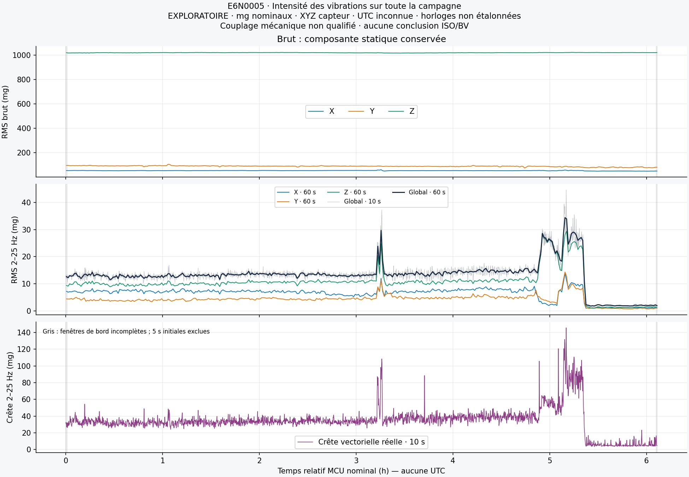
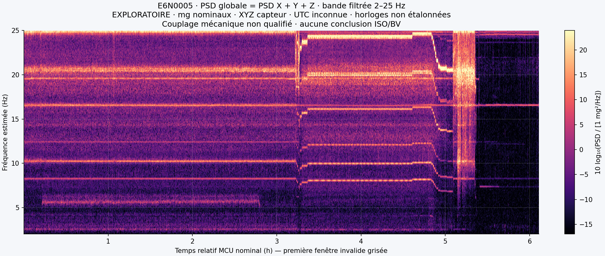
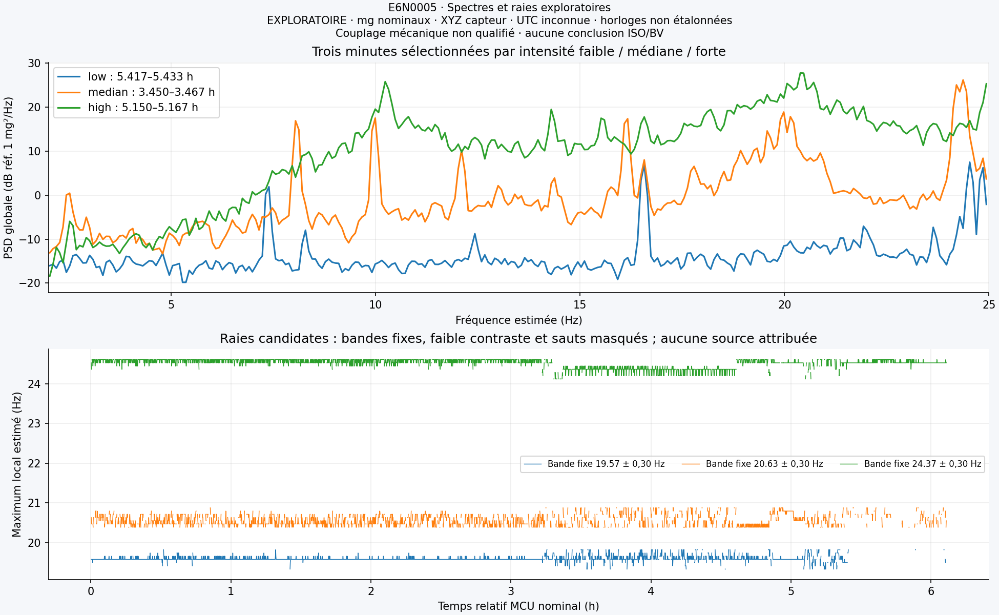
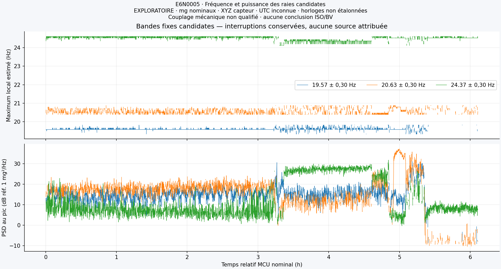

Portée limitée : mg nominaux, axes capteur, temps relatif MCU et UTC inconnue. Pose et horloges non étalonnées ; digestRAM indépendant perdu après coupure. Aucun indice de confort ou conformité ISO/BV.
13,36 mgRMS global médian · fenêtres 60 s
34,40 mgMaximum du RMS global · 60 s
145,64 mgCrête vectorielle filtrée maximale
L'intensité au fil de la campagne
Butterworth 2–25 Hz (−3,01 dB aux bornes). Gris : fenêtres de bord incomplètes. Les 11 warmups FIR et 5 s de stabilisation sont exclus des indicateurs filtrés. Couverture : 99,9773 % des échantillons.

Cinq épisodes dépassent le P90 interne de 15,345 mg, soit 37 minutes sur les 365 minutes complètes retenues. Ce seuil décrit la campagne ; il ne mesure pas la gêne humaine.
La composition fréquentielle
PSD globale = somme des puissances XYZ. Couleur : dB référencés à 1 mg²/Hz. Résolution numérique 0,0812 Hz estimée ; différence de bases PC/MCU ≈ 0,68 %, sans correction physique qualifiée.


Voir séparément la puissance des raies candidates

Aucun régime, équipement ou événement de conduite n'est attribué sans journal indépendant synchronisé.
Données, vérifications et suite
58 552 136 XYZ ; import strict COMPLETE ; source immuable. Quatorze tests passent et trois plages réelles sont contre-calculées par FFT indépendante. Catalogue local : 49 134 métriques, aucun XYZ brut, réimport idempotent et quatre requêtes vérifiées.
CSV : 1 s (gzip) · 10 s · 60 s · Épisodes · PSD comparées · Raies candidates
Perspective : qualifier la pose, les axes, la cadence, la réponse à 1 Hz et l'intégration vitesse avec un appareil étalonné ; Wm et méthode normative à versionner ultérieurement. Aucun nouveau test physique n'a été réalisé pour cette analyse PC.